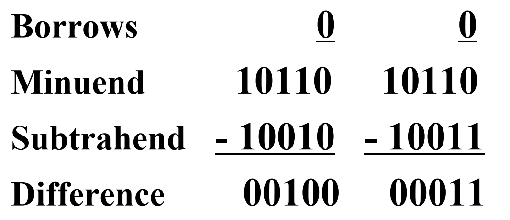
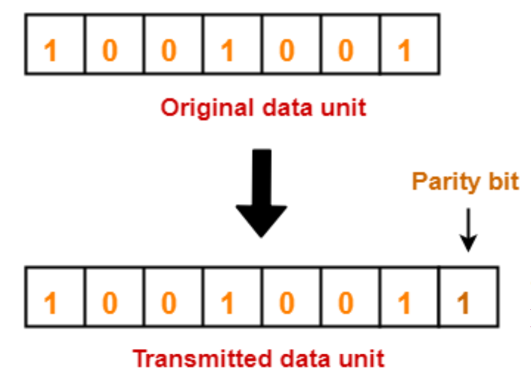
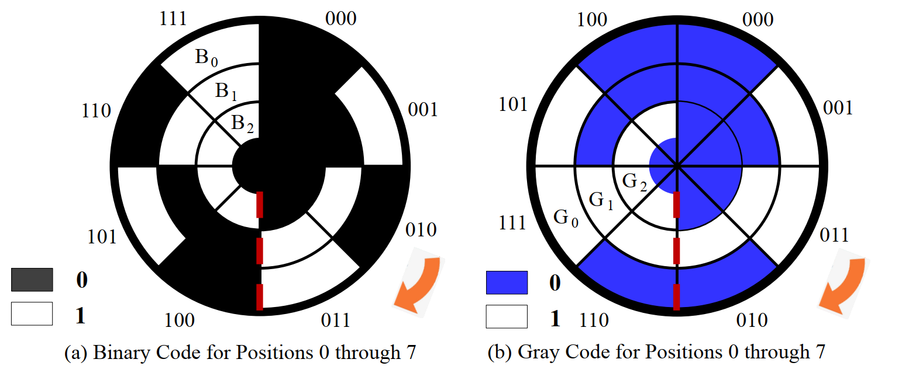
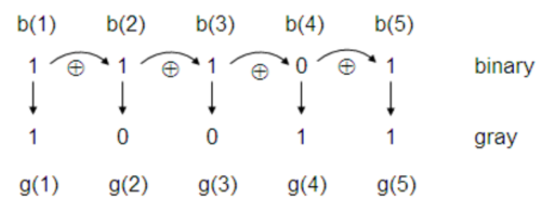
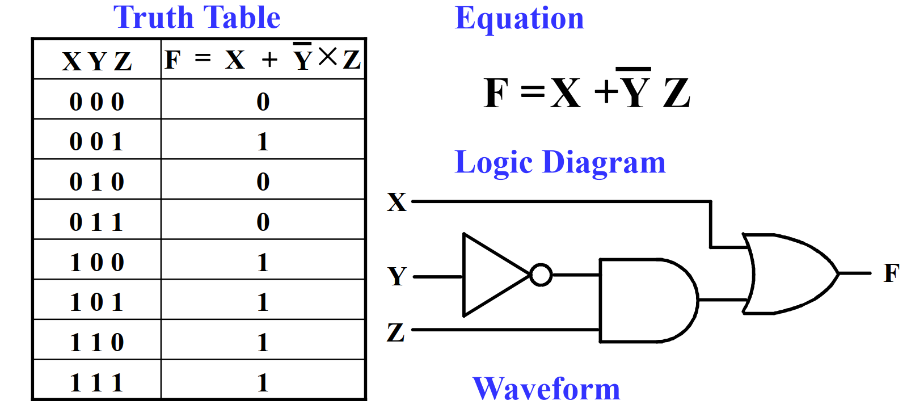
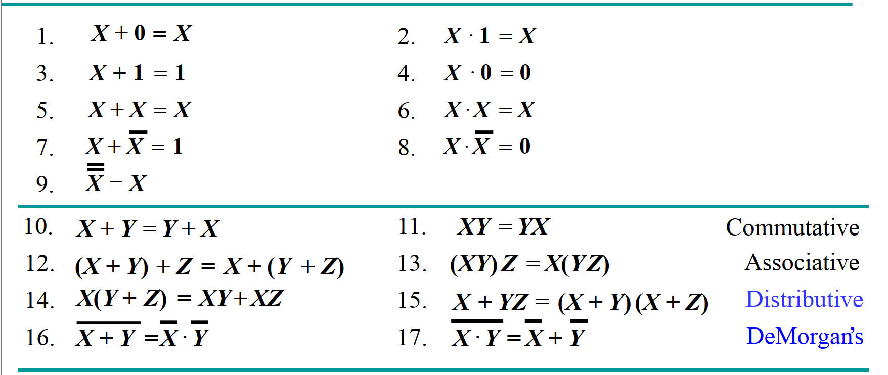

LCDF¶
Week 1: Number Systems and Boolean Algebra¶
Part 1¶
Number Systems¶
Representation¶
-
A number with \(radix\ r\) is represented by a string of digits: $$ A_{n-1}A_{n-2}\dots A_{1}A_{0}.A_{-1}A_{-2}\dots A_{-m+1}A_{-m} $$ where \(0\leq{A_i}<r\) and \(.\) is the radix point
-
The string of digits represents the power series: $$ Number_r=(\Sigma_{i=0}^{i=n-1}A_i\cdot{r^i}+\Sigma_{j=-m}^{j=-1}A_j\cdot{r^j}) $$
Binary Arithmetic¶
- Single Bit Addition with Carry
- Mutiple Bit Addition
- Single Bit Subtraction with Borrow
- Mutiple Bit Subtraction
- Multiplication
- BCD Addition
Single Bit Subtraction with Borrow¶
Mutiple Bit Binary Subtraction¶

Binary Multiplication¶
Converting Decimal to Binary¶
- Method 1
- Subtract the largest power of 2 not exceed the number
- Repeat, subtracting from the prior remainder and recording the power, until the remainder is zero
- Place 1's in the positions in the binary result corresponding to the powers recorded; in all other positions place 0's
Method 1¶
Converting Decimal to Binary (Cont.)¶
- Method 2
- Convert the Integer Part
- Convert the Fraction Part
- Join the two results with a radix point
Conversion Details¶
- To Convert the Integral Part:
Repeatedly divide the number by the new radix and save the remainders. The digits for the new radix are the remainders in reverse order of their computation. If the new radix is more than 10, then convert all remainders exceed 10 to digits A, B, ...
- To Convert the Fraction Part:
Repeatedly multiply the fraction by the new radix and save the integer digits that result. The digits for the new radix are the Integer digits in order of their computation. If the new radix is more than 10, then convert all integers exceed 10 to digits A, B, ...
Example: Convert \(46.6875_{10}\) To Base 2¶
- Convert 46 to Base 2
\(46_{10}=101110_2\)
- Convert 0.6875 to Base 2
\(0.6875_{10}=0.1011_2\)
- Join the results together with the radix point:
radix point:
\(46.6875_{10}=101110.1011_2\)
Q: What if the fractional part can't become 0 as a result of the repeated multiplications?¶
Solution: Specify number of bits to right of radix point and round or truncate to this number.¶
Octal (Hexadecimal) to Binary and Back¶
- Example:
\((67.731)_8=110\ 111.111\ 011\ 001_2\)
\((312.64)_8=011\ 001\ 010.110\ 100_2=11001010.1101_2\)
\(11\ 111\ 101.010\ 011\ 11_2=(375.236)_8\)
\(10\ 110.11_2=(26.8)_8\)
\((3\rm{AB}4.1)_{16}=0011\ 1010\ 1011\ 0100.0001_2\)
\((21\rm{A}.5)_{16}=0010\ 0001\ 1010.0101_2\)
\(1001101.01101_2=0100\ 1101.0110\ 1000_2=(4\rm{D}.68)_{16}\)
\(110\ 0101.101_2=(65.\rm{A})_{16}\)
Q: How many bits are required to represent decimal digits with a binary code?¶
Solution: \(\lceil log_2{10} \rceil=4\)¶
- Generally, Given M elements to be presented by a binary code, the minimum number of bits, \(n\), needed, satisfies the following relationships: $$ 2^n\geq{M}>2^{n-1} $$ \(n=\lceil{log_2{M}}\rceil\), where \(\lceil x \rceil\) called the ceiling function, is the integer greater than of equal to x
More Binary Codes¶
-
You can represent 4 elements in \(radix\ r=2\) with \(n=2\) digits: (00, 01, 10, 11).
-
You can represent 4 elements in \(radix\ r=2\) with \(n=4\) digits: (0001, 0010, 0100, 1000).
-
This second code is called a "One-hot code".
-
One-hot encoding consists in using one bit representing each state.
More Binary Codes (Cont.)¶
Binary Coded Decimal (BCD)¶
- The BCD code is the 8, 4, 2, 1 code.
- 8, 4, 2, and 1 is weights
- BCD is a weighted code
- This code is the simplest, most intuitive binary code for decimal digits and uses the same powers of 2 as a binary number, but only encodes the first ten values from 0 to 9
Q: How to distinguish between Conversion and Coding?¶
Conversion or Coding?¶
- Conversion is to convert a decimal number into a binary number.
- Coding is to convert every decimal digit into a binary number.
- \(13_{10}=1101_2\) (This is Conversion)
- \(13 \Leftrightarrow 0001|0011\) (This is Coding)
Example: Add \(2905_{\rm{BCD}}\) to \(1897_{\rm{BCD}}\)¶
Error-Detection Methods¶
- Parity Bit Error-Detection Codes
- Parity is an extra bit appended onto the code word to make the number of 1's odd or even.
- Even Parity: the number of 1's in the code word is even.
- Odd Parity: the number of 1's in the code word is odd.

Gray Code¶

Conversion from Binary Code to Gray Code¶
- Let Binary code be \(b_3b_2b_1b_0\). Then the Gray code can be obtained as follows:
\(g_3=b_3\)
\(g_2=b_3 \oplus b_2\)
\(g_1=b_2 \oplus b_1\)
\(g_0=b_1 \oplus b_0\)

Part 2¶
Boolean Algebra¶
Logical Operation¶
- The three basic logical operations are:
- AND
- OR
- NOT
- AND is denoted by a dot ( \(\cdot\) )
- OR is denoted by a plus ( + )
- NOT is denoted by an overbar ( $ \overline{} $ ), a single quote mark ( ' ), or ( ~ ) before the variable
Logic Gates¶
Other Commonly Used Logic Gates¶

Universal Gate¶
Logic Diagrams and Expressions¶

Boolean Algebra¶

Duality rules¶
-
The dual of an algebraic expression is obtained by interchanging \(+\) and \(\cdot\) and interchanging 0's and 1's, while variable don't be inverted
-
Seek the dual of a function, the operation order keep as same as the origin function
- The identities appear in dual pairs. When there is only one identity on a line the identity is self-dual. i.e., the dual expression = the original expression.
- Unless it happens to be self-dual, the dual of an expression does not equal to the expression itself.
Duality rules (Cont.)¶
- Example: \(F=(A+\overline{C})\cdot{B}+0\)
Dual: \(F=(A\cdot\overline{C}+B)\cdot{1}=A\cdot\overline{C}+B\)
- Example: \(G=X\cdot{Y}+(\overline{W+Z})\)
Dual: \(G=((X+Y)\cdot{\overline{(W\cdot{Z})}})=(X+Y)\cdot{(\overline{W}+\overline{Z})}\)
- Example: \(H=A\cdot{B}+A\cdot{C}+B\cdot{C}\)
Dual: \(H=(A+B)\cdot{(A+C)}\cdot{(B+C)}\)
Duality rules (Cont.)¶
-
If the function G is the dual of F, then F is also G of duality. G and F is mutually duality formula.
-
If the two logical functions F and G are equal, then the duality formula F' and G' are the same.
-
Example:
\(X+XY=X \Leftrightarrow X(X+Y)=X\) (Absorption)
\(X(Y+Z)=XY+XZ \Leftrightarrow X+YZ=(X+Y)(X+Z)\) (Distributive)
Complementing Functions¶
-
For logic function F, interchange \(+\) and \(\cdot\) operators and complement each constant value and literal, then obtained the new function is the inverse function of the original function, referred to as: \(\overline{F}\)
-
Example
\(F=\overline{A}B+C\overline{D} \Leftrightarrow \overline{F}=(A+\overline{B})(\overline{C}+D)\)
\(F=\overline{X}Y\overline{Z}+X\bar{Y}\bar{Z} \Leftrightarrow \overline{F}=(X+\overline{Y}+Z)(\overline{X}+Y+Z)\)